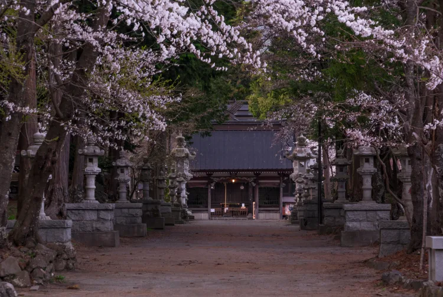

สถานที่แสวงบุญ

สถานที่แสวงบุญ
ผู้คนกว่า 300,000 คนจะมาปีนภูเขาไฟ ฟูจิ ทุก ๆ ฤดูร้อน เส้นทางปีนเขาหลักทั้งสี่สายต่างมีเส้นทางไปยอดเขาต่างกัน รวมทั้งสถานที่หยุดพักหรือ “สถานี” เพื่อบริการสิ่งอำนวยความสะดวกและที่พักตามทาง นักปีนเขาส่วนใหญ่จะวางแผนให้ปีนขึ้นไปทันดูพระอาทิตย์ขึ้น ลองจินตนาการว่าคุณปีนเขาในช่วงเช้าตรู่เพื่อขึ้นไปบนยอดเขาและชมพระอาทิตย์ที่ค่อย ๆ โผล่ออกมาจากเส้นขอบฟ้า ในยุคก่อน ภูเขาไฟ ฟูจิ เป็นสถานที่ปฏิบัติธรรมสำหรับพระและยังเป็นสถานที่แสวงบุญของคนธรรมดาทั่วไปอีกด้วย ศาลเจ้าต่าง ๆ ที่เชิงเขาเป็นหลักฐานที่พิสูจน์ว่าภูเขาไฟ ฟูจิมีความสำคัญทางด้านจิตวิญญาณและประวัติศาสตร์